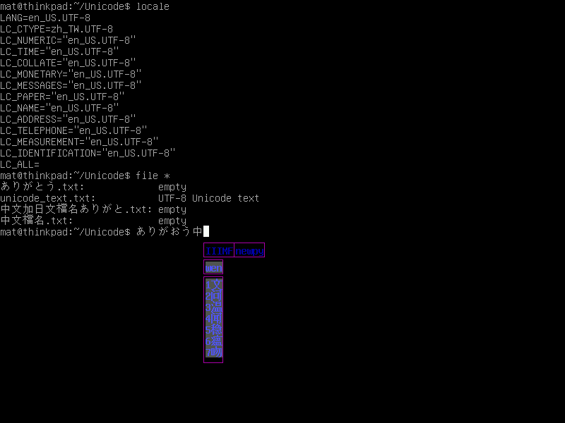
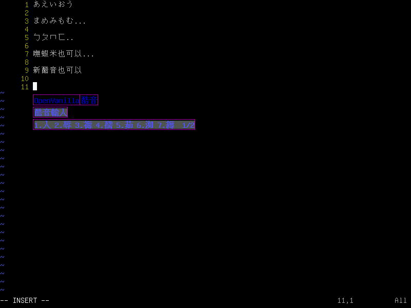
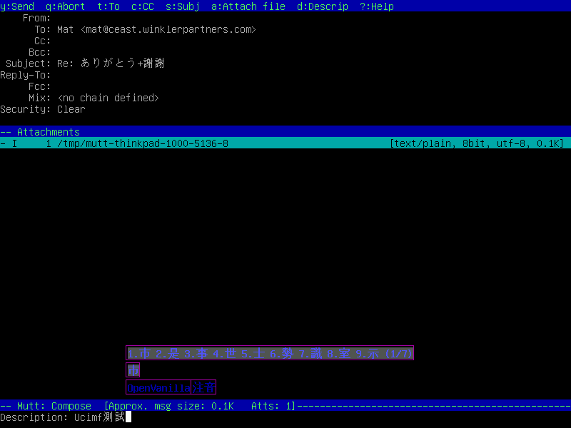
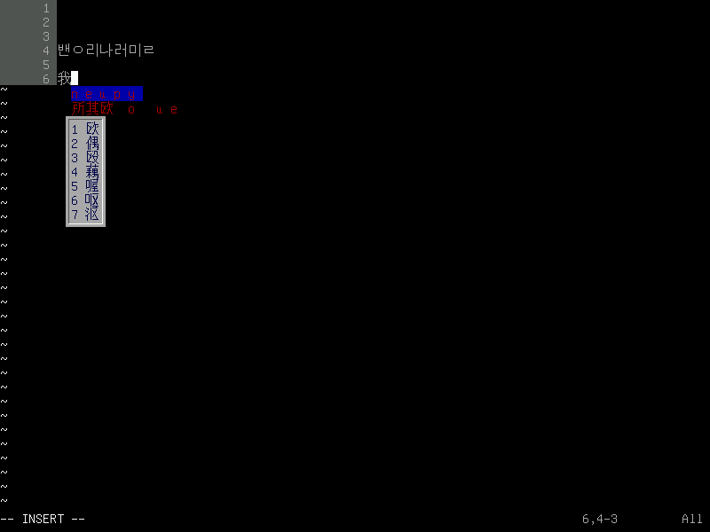
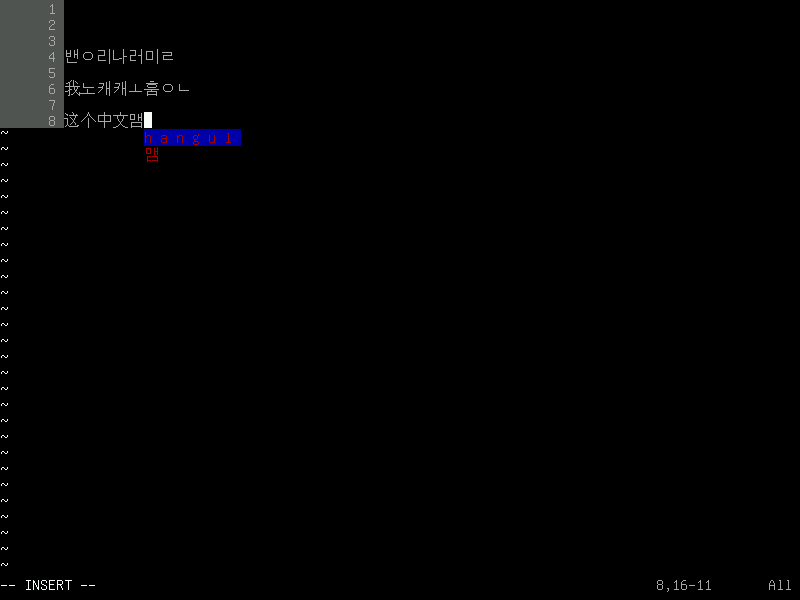

| 在 Unicode Console 環境下, 提供外掛輸入法支援的函式庫架構.
Copyright © 2006-2007 Chun-Yu Lee (Mat) and Open RazzmatazZ Laboratory (OrzLab) 授權方式： GNU General Public License (GPL) 作者:
|
啟動 FrameBuffer 必須在開機時設定核心參數
可以直接加入 LILO, GRUB, ...等 bootloaders 的設定,
以方便每次開機都進入相容的顯示環境.
vga=785 (640x480, 16 ) vga=788 (800x600, 16 ) vga=791 (1024x768, 16 ) vga=794 (1280x1024, 16 )
你需要某些環境設定以符合程式可能用到的參數.
使用UTF-8以正確辨識Unicode字元
OpenVanilla的輸入法模組所在的目錄
/etc/ucimf.conf 或是 ~/.ucimf.conf
將下列的參數直接寫到裡面即可.
輸入法架構模組所在的目錄 IMF_MODULE_DIR=/usr/lib/ucimf/
Unicode字型檔案的路徑 UCIMF_FONTPATH=/usr/share/fonts/truetype/arphic/ukai.ttf
F12 或 Ctrl-Space 切換輸入狀態 F11 或 Ctrl-ShiftL 切換輸入法 F10 或 Ctrl-ShiftR 動態切換輸入法架構模組
專案主站, 檔案下載, 程式碼管理
http://sourceforge.net/projects/ucimf
討論區, 郵件論譠, 問題回報
http://groups.google.com/group/ucimf
下載
svn co https://ucimf.svn.sourceforge.net/svnroot/ucimf ucimf
https://sourceforge.net/project/showfiles.php?group_id=208016




